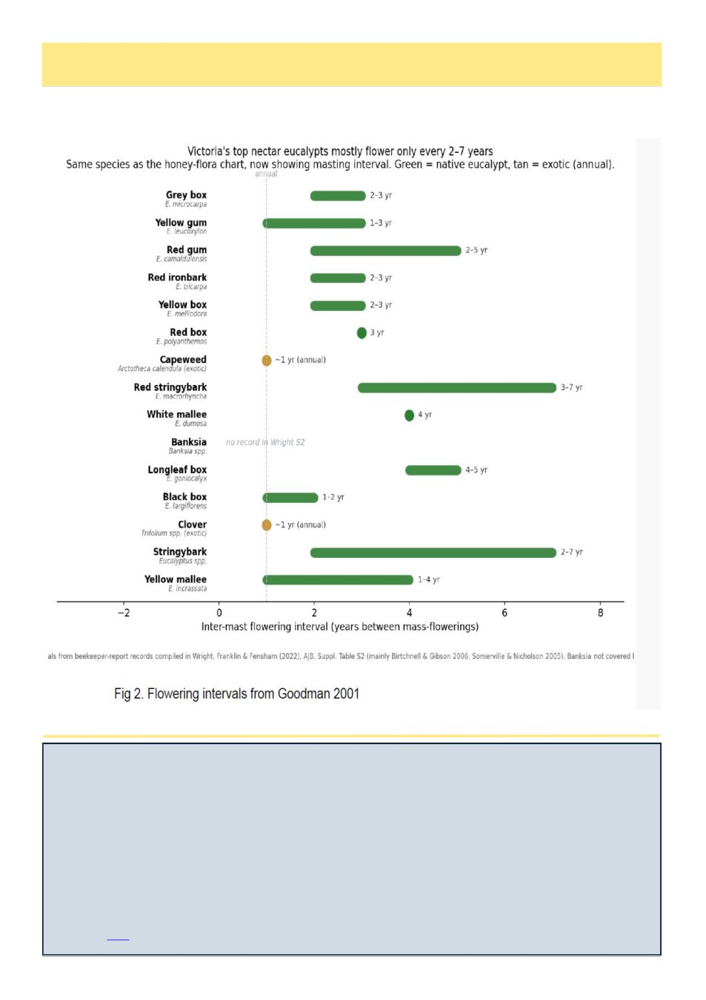

August 2026
23
Exploring honey’s anti-aging properties in human skin cells
SOCIETY FOR EXPERIMENTAL BIOLOGY
Ongoing research reveals that multifloral honey is a promising candidate for protecting human skin cells from prem-
ature ageing and cell damage caused by UV radiation, with the potential for developing future clinical and cosmetic
applications.
Honey is already well known in the medical and cosmetic industries for its antioxidant, antimicrobial, anti-
inflammatory and wound-healing properties, and sterile honey-derived medical products already exist in the form of
dressings, gels and ointments for burns and difficult-to-heal wounds.
―I have always been interested in the fact that certain honeys, such as Manuka honey, are used in medical-grade ap-
plications,‖ says Dr Fikiye Fulya Kavak, a member of Prof. Margherita Maioli's research team at the University of
Sassari, Italy, whose background in medical biology and personal interests in beekeeping and cosmetic science in-
spired this project. ―This led me to ask whether high-quality multifloral honey could also show measurable protec-
tive effects for human skin cells.‖
Read more here
When Will Those Trees Flower?, cont’d
And now, keeping the same order from the above chart, here‘s how frequently those same plants flower:
(Continued on page 24)
(Continued from page 22)